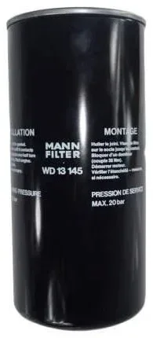

Где пригодится
Рассмотрите при замене масляного фильтра по регламенту оборудования. Для точного подбора нужны маркировка старого фильтра и модель компрессора.

Масляный фильтр WD13145 задерживает загрязнения в масляном контуре компрессора. Для планового обслуживания с проверкой артикула и размеров.
| Артикул | WD13145 |
|---|---|
| A | 136 мм |
| B | 100 мм |
| C | 111 мм |
| Резьба | 1 1/2-16 UN |
| Высота | 302 мм |
| Аналоги | ФМ302/180, 57213145, SH8109 и др. |
Пришлите маркировку и размеры старого элемента. Проверим совместимость до заказа: похожие снаружи фильтры и сепараторы могут отличаться по посадке.
Артикул, посадочные размеры, материал уплотнений и совместимость подтверждаются перед заказом. Одинаковый внешний вид не гарантирует взаимозаменяемость.
Посмотреть карточку на Satu.kz ↗Рассмотрите при замене масляного фильтра по регламенту оборудования. Для точного подбора нужны маркировка старого фильтра и модель компрессора.
Для подбора нужны артикул, модель компрессора и размеры установленного элемента. По возможности приложите фото маркировки и посадочного места.
Укажите город — рассчитаем перевозку и согласуем срок. До покупки уточним состав заказа, гарантию и условия обслуживания.
Как получить расчёт доставки ↗